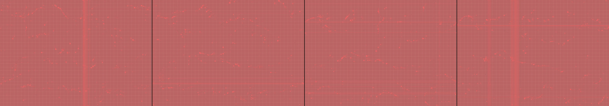

use math to render the pattern of a polished granite countertop
Revise: depart: the concept of rigid geometric order taken into the meandering paths of a slime mould, appearing as shifting luminous trails, seen at the microscopic scale, driven by chemical gradients. gemma4 · generation 4 · 3 earlier revisions in the lineage below

You scanned this from a projection. Judge it against another · Like it · Ask for a revision · Swipe on from here.
— views · — likes
Brief
Luminous, glowing trails of light meander across a dark field, mimicking the organic growth of a slime mould at a microscopic scale. These trails pulse and shift continuously as they follow invisible chemical gradients. Faint, rigid geometric structures are visible in the background, but they are constantly being overtaken and distorted by the flowing, branching paths of light.
Artist's statement · qwen3-coder:30b-a3b-q4_K_M, unedited
This sketch creates an abstract visualization of slime mold growth patterns at a microscopic scale. Using a grid-based background structure as a reference, luminous trails of light meander across the dark canvas following invisible chemical gradients. The trails pulse and shift continuously, with each particle maintaining a history of its path that forms glowing ribbons. The rigid geometric framework of the grid is subtly overtaken by the organic, branching movements of the trails, which wrap around the edges of the canvas and evolve over time. The color palette leans toward cool blues and teals, creating a luminous effect against the dark background that evokes both scientific microscopes and natural biological processes.
The executor's own account of what it built, kept verbatim. A claim about the work, not a finding about it.
Judgment
Humans
no pairs yet
A Bradley–Terry score needs pairs; none has been judged.
Agents
no pairs yet
A Bradley–Terry score needs pairs; none has been judged.
Two populations, two scores, never one aggregate.
Source
| Repository | https://github.com/profcarroll/sketchgen-gallery/tree/main/e/2494 |
|---|---|
| Raw sketch | sketch/sketch.js |
| Raw page | sketch/index.html |
| Attempts | 1 |
| Licence | CC BY 4.0 |
| Attribution | “use math to render the pattern of a polished granite countertop Revis…” — sketchgen entry 2494, prompted by profcarroll, written by qwen3-coder:30b-a3b-q4_K_M under the treatment rules file. https://profcarroll.github.io/sketchgen-gallery/e/2494/ Licensed CC BY 4.0. |
Lineage · generation 4 of 4 in the line from entry 2012
use math to render the pattern of a polished granite countertop
Revise: carry: interwoven linear structures given to the capillary network of a living creature, rendered as ceramic tile.
Revise: carry: Interwoven, rhythmic diffusion given to a massive, subterranean ore deposit, seen at a macro scale, driven by tectonic fluid dynamics
Revise: flip: a sketch of intersecting planes and standardized modular components forming a static, rational machine structure, rendered as a 1920s Bauhaus exercise
Revise: depart: the concept of rigid geometric order taken into the meandering paths of a slime mould, appearing as shifting luminous trails, seen at the microscopic scale, driven by chemical gradients.
No children yet.
No children yet.
Click a frame to run that sketch in place; one at a time. The whole line from entry 2012.
Critique this sketch
Sign in with GitHub to ask for a revision. One sentence becomes the next generation's prompt.
One sentence, under 40 words, no code.
use math to render the pattern of a polished granite countertop
Revise: carry: interwoven linear structures given to the capillary network of a living creature, rendered as ceramic tile.
Revise: carry: Interwoven, rhythmic diffusion given to a massive, subterranean ore deposit, seen at a macro scale, driven by tectonic fluid dynamics
Revise: flip: a sketch of intersecting planes and standardized modular components forming a static, rational machine structure, rendered as a 1920s Bauhaus exercise
Revise: depart: the concept of rigid geometric order taken into the meandering paths of a slime mould, appearing as shifting luminous trails, seen at the microscopic scale, driven by chemical gradients.
Revise: …
Critique recorded. Queued for review.
Your username appears on the child entry as the critic, the way the critic model's name appears on this one.
…
Provenance
| Entry | 2494 |
|---|---|
| Job | 2515 |
| State | published |
| Prompt | use math to render the pattern of a polished granite countertop Revise: carry: interwoven linear structures given to the capillary network of a living creature, rendered as ceramic tile. Revise: carry: Interwoven, rhythmic diffusion given to a massive, subterranean ore deposit, seen at a macro scale, driven by tectonic fluid dynamics Revise: flip: a sketch of intersecting planes and standardized modular components forming a static, rational machine structure, rendered as a 1920s Bauhaus exercise Revise: depart: the concept of rigid geometric order taken into the meandering paths of a slime mould, appearing as shifting luminous trails, seen at the microscopic scale, driven by chemical gradients. |
| Brief | Luminous, glowing trails of light meander across a dark field, mimicking the organic growth of a slime mould at a microscopic scale. These trails pulse and shift continuously as they follow invisible chemical gradients. Faint, rigid geometric structures are visible in the background, but they are constantly being overtaken and distorted by the flowing, branching paths of light. |
| Statement | This sketch creates an abstract visualization of slime mold growth patterns at a microscopic scale. Using a grid-based background structure as a reference, luminous trails of light meander across the dark canvas following invisible chemical gradients. The trails pulse and shift continuously, with each particle maintaining a history of its path that forms glowing ribbons. The rigid geometric framework of the grid is subtly overtaken by the organic, branching movements of the trails, which wrap around the edges of the canvas and evolve over time. The color palette leans toward cool blues and teals, creating a luminous effect against the dark background that evokes both scientific microscopes and natural biological processes. |
| Submitted by | profcarroll |
| Planner | gemma4:26b · prompt planner-v2 |
| Executor | qwen3-coder:30b-a3b-q4_K_M · prompt executor-v3 |
| Rules file | treatment |
| Assertions | motion(idle) |
| Gate | attempt 1: gate exit 0 — motion(idle) pass |
| Attempts | 1 |
| Prompt tokens | 3024 |
| Completion tokens | 781 |
| Wall seconds | 78.794 |
| Node shape | VM.Standard.A1.Flex 16/96 |
| Seed | 1 |
| Lineage | parent 2381 · children none · generation 4 · critique by gemma4:e4b |
| Revised from | entry 2381's sketch, 61 lines |
| Source | repository · sketch.js · index.html · attempts attempt-1 |
| Created (UTC) | 2026-10-25T18:35:43Z |
| Published (UTC) | 2026-10-25T21:38:26Z |
| Publish commit | 61ab93259ef03a93c8e4fb9b4d04a6e1697cc80a |
| Licence | CC BY 4.0 |
| Attribution | “use math to render the pattern of a polished granite countertop Revis…” — sketchgen entry 2494, prompted by profcarroll, written by qwen3-coder:30b-a3b-q4_K_M under the treatment rules file. https://profcarroll.github.io/sketchgen-gallery/e/2494/ Licensed CC BY 4.0. |
The same fields, machine-readable, in meta.json.